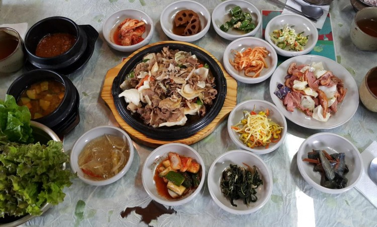
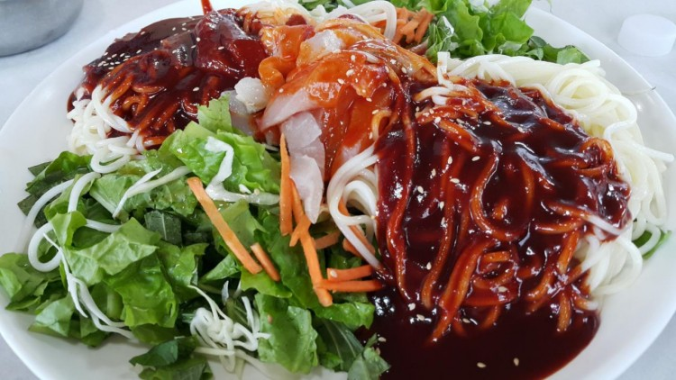
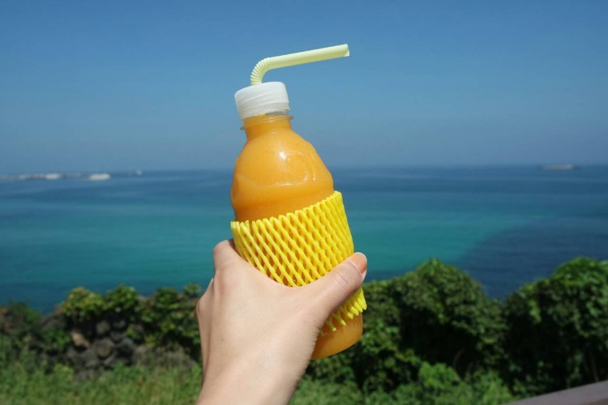

꽃밥 강된장 정식
애월의 유명한 제주도맛집 중을 하나 추천하라고 하면 단연 꽃밥이다. 제주도맛집 여행에서 흑돼지는 빼놓을 수 없는 필수 음식인데, 꽃밥에서는 기존 흑돼지 구이와 다른 담백하고 건강한 흑돼지를 맛볼 수 있다.

동복리해녀촌 회 국수
고기국수보다 더 강력한 그 이름을 바로 회 국수! 두툼한 회와 신선한 채소, 그리고 너무 얇지 않은 중면에 새콤한 비법 양념장을 비벼서 먹는 회 국수는 여행이 끝나기 전 또 다시 찾는 사람이 많을 정도로 별미이다. 1인분에 8천 원으로 저렴하면서도 양은 매우 푸짐하다.

망고주스
제주의 인기 음료 가게는 바로 리치 망고! 제주도 애월 해안도로에서 시작하여 전국 곳곳에 매장이 있는 망고 셰이크를 전문으로 하는 카페이다. 망고만 100% 넣어 만든 ‘스페셜 망고주스‘ 가 가장 인기 있으며 그 외에도 다양한 망고 음료가 있으니 골라서 먹는 재미도 있다.